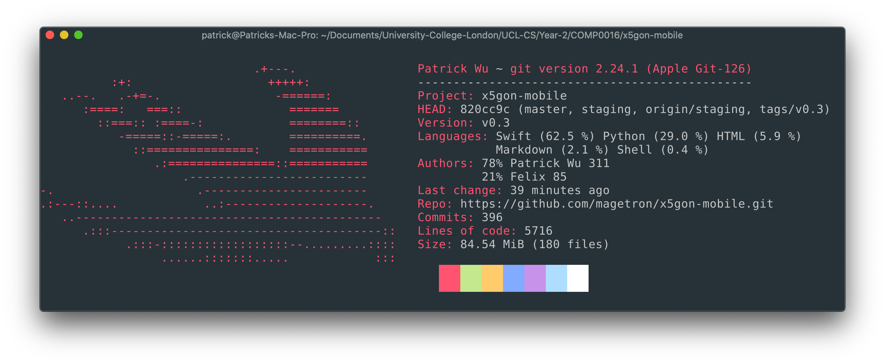
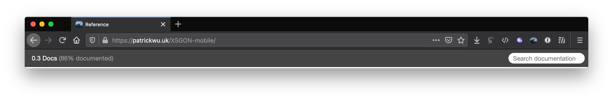
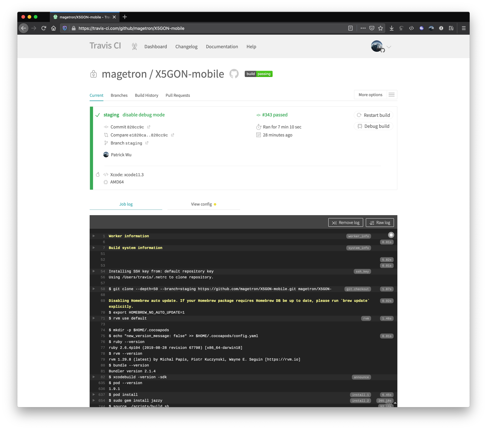

X5GON-mobile 



Deployment Manual
Prerequisites
- Git
- Xcode 11.3+(ideally 11.4) running on macOS 14 Mojave+(ideally 15 Catalina)
- Apple Device running iOS(iPadOS) 13.3+(ideally 13.4) or a Device Simulator with similar specs
- Cocoapods
- Homebrew (CLI-only)
- ios-sim (CLI-only)
- ruby-gem (docs-only)
- jazzy (docs-only)
- swiftformat (dev-only)
General Installation
$ git clone https://github.com/magetron/x5gon-mobile.git
$ pod install
$ brew install ios-sim (CLI-only)
$ gem install jazzy (docs-only)
$ brew install swiftformat (dev-only)
To Use Xcode GUI:
Build and Run
Double click to open x5gon-mobile.xcworkspace and select target on top left corner.
Click the Run Button to build and run.

To Use CLI
Build First
$ source ./scripts/build.sh
Then Run
$ source ./scripts/run.sh
Note: It is possible to run iOS application with temporary signature on an actual iPhone using CLI. However, given the complexity of steps, we do not recommend this deployment method.
Building, Testing
To Use Xcode GUI:
Select relevant option / profile in the Product drop down menu of Xcode.

To Use CLI
Build with Test
$ source ./scripts/build.sh -test
Alternatively, test with Swift 5.1, Xcode 11.3 backwards compatible feature.
$ source ./scripts/build.sh -old-test
Test Only
$ xcodebuild test -workspace x5gon-mobile.xcworkspace -scheme x5gon-mobile -destination 'platform=iOS Simulator,name=iPhone 11 Pro Max,OS=13.4'
Change destination argument as you wish to test on different devices or different OS versions.
Documentation
Online version deployed on GitHub Pages.
Build Docs
$ source ./scripts/build-docs.sh
Static Documentation will be generated at ./docs.
Simply double click ./docs/index.html to open with a browser or use open ./docs/index.html on macOS.
Setting up new Development Environment
Install Development Dependencies and Git Hooks
$ source ./scripts/setup-dev.sh
This script
- sets up a local
Gitpre-commit hook to rungit-diffandswiftformaton source code. - installs development required dependencies for local user.
Showcase
Interface

Test Coverage

Documentation Coverage

CI/CD with Travis
